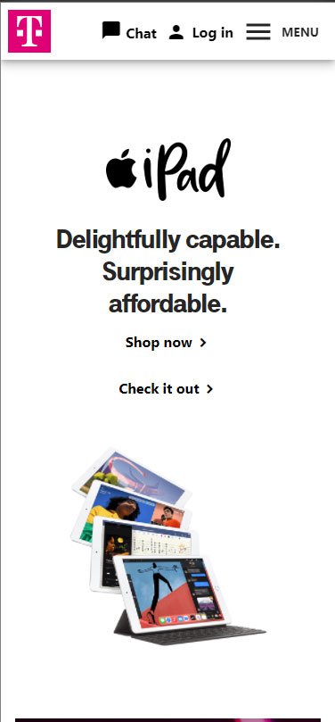
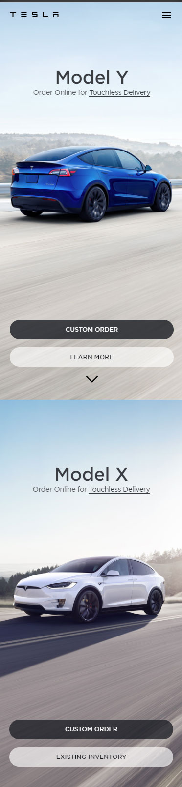

This site used grouping near the end of the home page to display different groupings of links. There is a clear separation between each group and it is apparent very quickly which group the thing you are looking for can be found.
Law of Proximity
White Space and Clean Design
T-Mobile -
https://www.t-mobile.com/

T-mobile's site had multiple sections on the front page and the background colors and height of each section was fairly consistant. There was a nice amount of padding given horizontally to give a bit of butter to the sides and the top of each section was padded as well to make it look cleaner. The spacing of the text also played a very important in keeping the site not look cluttered.
Law of Repetition

Tesla's site was pretty neat. I had to stitch two screenshots together to demonstrate the repetition that is used on their entire home page. They have a full screen image of one of their car models with the name of it above and the call to action buttons below. As you scroll the text fades away and never overlaps the cars in the images. Then when you get to the next model there is another full screen image and the text and buttons fade in to the same location as the previous one with the text matching the new image. The same pattern continues many more times down the page.
The user interface was done very ingeniously by using repetition to have the user knowing exactly where to expect the next title and buttons as they scrolled down, while never taking the focus off of the products on the background image.